Saturday morning · launch is Monday
Every App, the morning after.
- What changed overnight for users, admins and developers.
- Each "Question for Ben" block is yours to answer.
- Say it out loud. Click an option if you like.
- Clicks save in this browser.
- The last screen copies them as text.
1 of 7
Where we are
- Nineteen threads ran overnight.
- About 170 pull requests merged since yesterday evening.
- everyapp.com was not touched.
- everyapp.team was updated without your go. See question 12.
Live today
- Live everyapp.team runs last night's code, from about 23:30.
- That is before most of the overnight merges.
- Behind Cloudflare Access, with four apps.
- OpenSEO, OpenCRM, OpenAnalytics, Agentic Inbox. Postiz is out.
- Not live yet "Needs setup", scopes, groups, caps, provider apps.
- The rollout is one word from you. Question 12.
Merged on main
- Access command, onboarding loop, setup skills
- Secrets model, "Needs setup", setup dialog
- OAuth scopes enforced per app
- Groups, usage, monthly caps, activity
- Provider apps (DataForSEO)
- CLI language, simplified repo, new starter
- Threat model, security review in CI
- Agent docs, drift test, docs sweep, two UI passes
- LICENSE, SECURITY.md, public-copy command
Live on everyapp.team
- Cloudflare Access in front, since yesterday
- The four apps. Postiz and todo removed
- The first UI pass: pages look like one product
- The CLI language and the simplify deletions
- Not yet: "Needs setup", scopes, groups, caps, provider apps, second UI pass
Only you can do these three today
- Roll the test account's Cloudflare token. Question 00, section 5.
- A loop file with it was committed. Still in history.
- The four app repos the README links. Question 20, section 5.
- Three do not exist. The fourth has no Every App port.
- Say "go" to the rollout. Question 12, section 6.
- Everything is merged. The order is written.
Also yours this weekend:
- Deploy everyapp.com with the new home page and docs.
- Push the public copy. Flip the repo public.
- Deprecate the old npm packages. Question 11e.
- Close the old Workers' side doors. Question 11d.
- Two words settle copy: README headline (1), license holder (17).
- Both ship with a default if you say nothing.
2 of 7
What a new user experiences now
- From a prompt in their agent to a live gateway.
The setup prompt, their agent, a gateway
- They paste the README prompt into their coding agent.
- The agent installs the tools and logs in to Cloudflare.
- It runs setup. About 15 minutes, mostly waiting on them.
- They open a link and create the owner account.
- Proven live The onboarding loop ran it on a wiped test account.
- Repo pre-cloned. An API token instead of the browser login.
- Claude Code passed twice, under six minutes.
- Codex passed with one nudge.
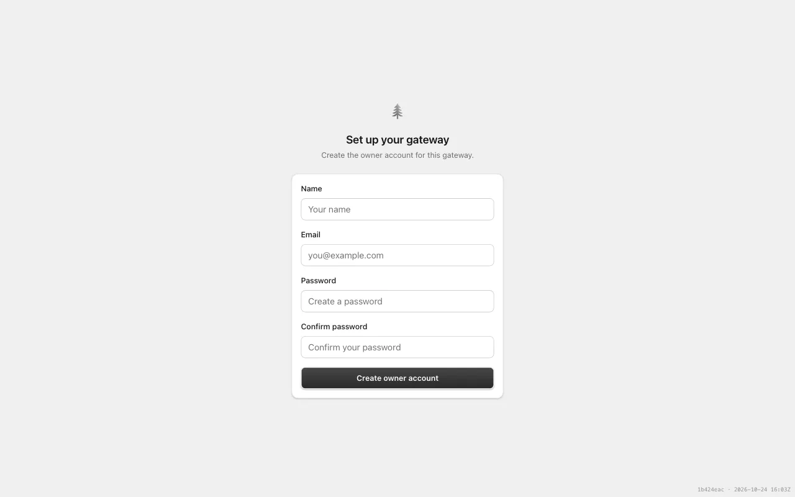
Ledger in docs/onboarding-loop. PRs #477 #488–#546.
The README is the voice of the launch. Which headline?
- README rewritten in the launch voice. Merged under your rule.
- Three headlines were ranked. The first is on main.
- Re-pick freely.
Also, question 2: the home page
- Home page copy merged under your rule.
- The site is not deployed. That stays yours.
- The README thread left one review comment, not applied:
- say who it is for, name the four apps, one setup time.
README #453, home page #380, docs home #454.
The first screen after claiming
- An empty home with one card: deploy your first app.
- Two commands to copy.
- The sidebar names the organization after the person. See 22a.

The starter app is now a proof screen. Keep it?
- The first thing every new user builds was rewritten. Without you.
- Now one screen: who you are, what the app was allowed.
- Plus its tools for AI clients, and a small todo list.
- 33 files became 15.
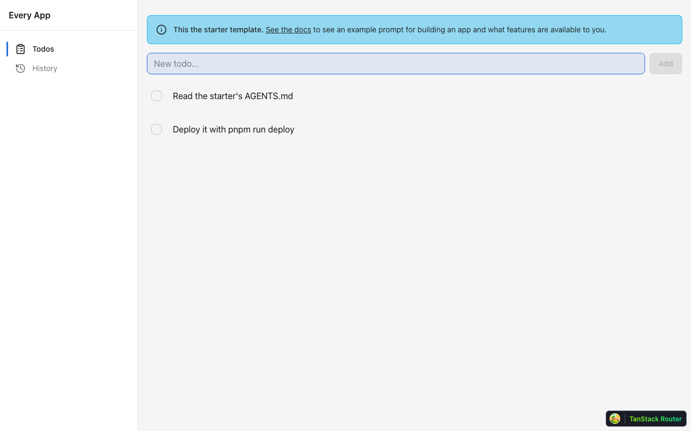
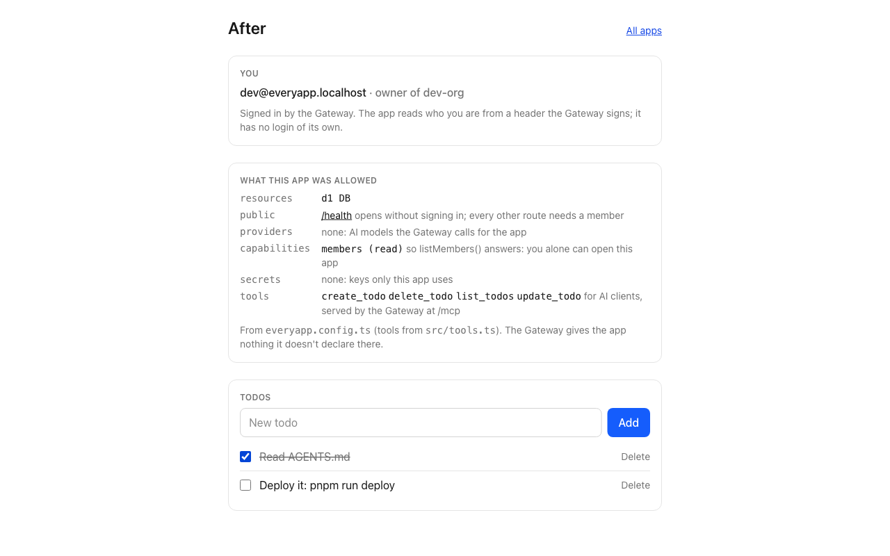
#544. Revert is one command on commit 1d5614f1.
NewLive after the rollout
"Needs setup" when a key is missing
- An app missing a key shows "Needs setup", not a broken page.
- Owners see the settings and one command.
- Members are told to ask an admin.
- Its tools stay out of AI clients until it is set.
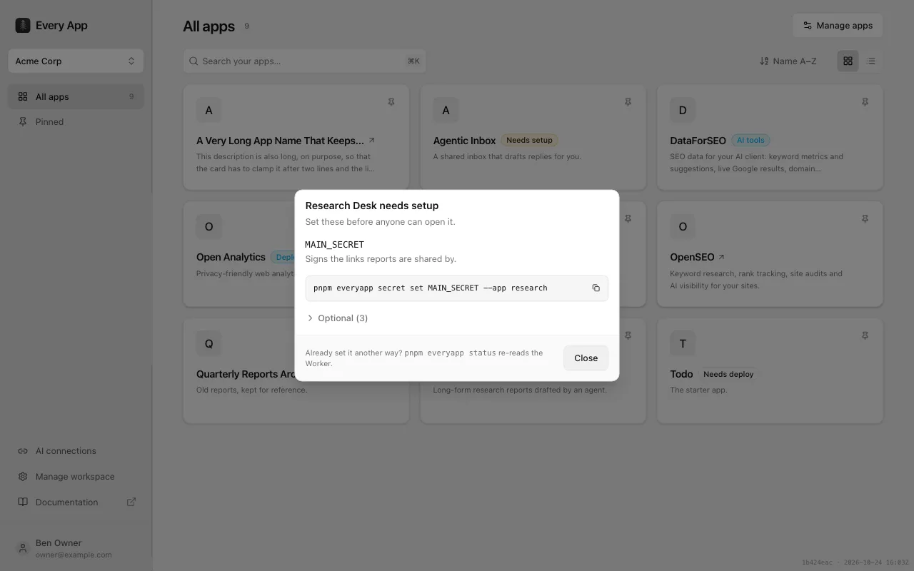
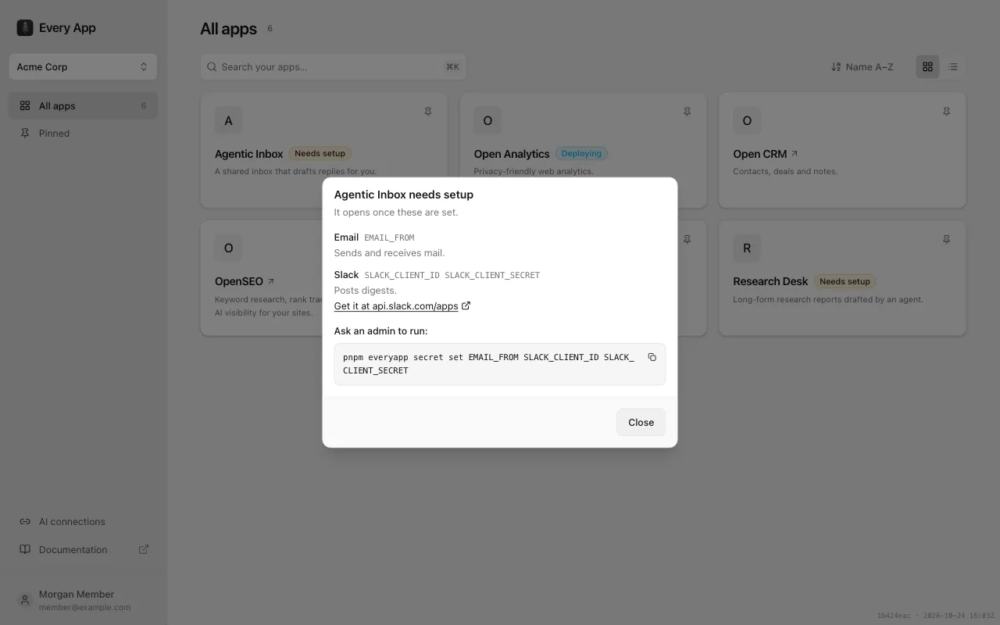
Secrets model #383 #395 #396 #397.
Live since yesterday
Access in front
- Cloudflare asks for a one-time email code first.
- About once a month.
- One command turns it on. One shows its state.
- AI clients and public routes still get through.
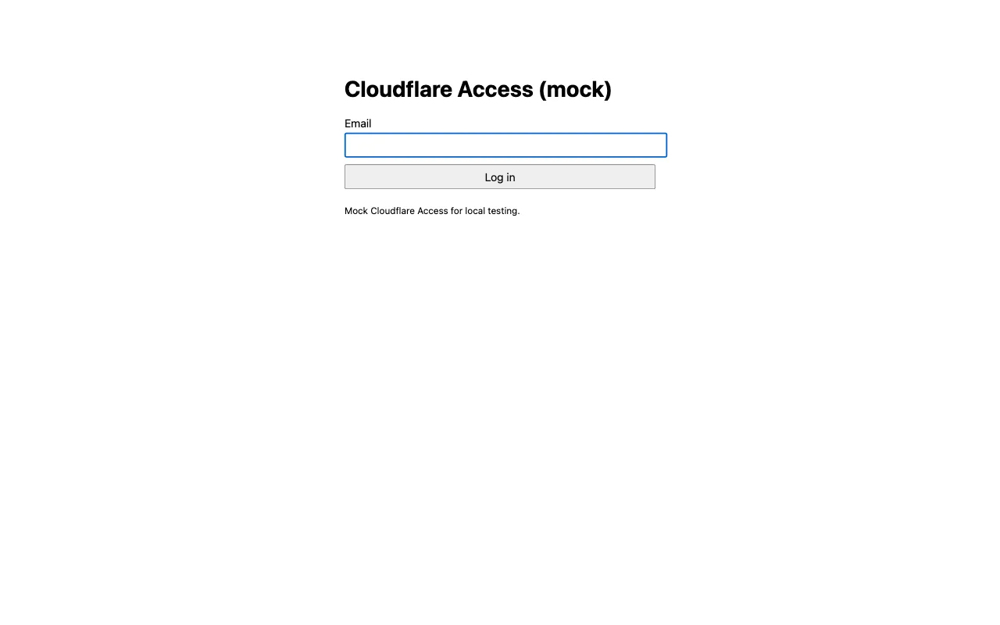
#379 access on|off|show.
Connecting an AI client
- One address connects Claude, ChatGPT, Claude Code and Cursor.
- A consent page asks: read, or read and write.
- All apps, or some.
- Claude Code used to go deaf after fifty minutes. Fixed on main.
- The fix reaches everyapp.team with the rollout.

#499 listen hold, #501 #503 #505 #516.
What a member sees
- Only the apps granted to them, directly or via a group.
- No manage buttons.
- An app that needs setup says so, in their voice.

What we judged and left, for users
- Three setup times are quoted: 15, 20, 5 to 20.
- The headline number is yours. No card asks it. Say it aloud.
- Docs say a .dev domain is a dollar at first.
- No Cloudflare page says so. Check Sunday.
- Consent preselects read and write, even for read-only asks.
- Forgot password says "Check your email" with no sender set.
- An Access session lasts 30 days.
- Deactivating a member in Every App is the real cutoff.
3 of 7
What an admin experiences now
- Six tabs on main: Users, Groups, Apps, Tokens, Usage, Activity.
- Groups arrives with the rollout.
- Two UI passes made them look like one product.
- A designer walked every screen this morning. 25 ranked fixes.
- Its top five are the questions here, by their screens.
- So they run out of letter order.
Apps: the table talks like a developer
- Rows show developer strings.
- Like "Deployed by api-token:…" and "tools on /mcp as dataforseo_<tool>".
- "Everyone" in the table. "3 of 6 users" in the dialog.
- Proposed: strip the strings. Rename the column "Who can open".
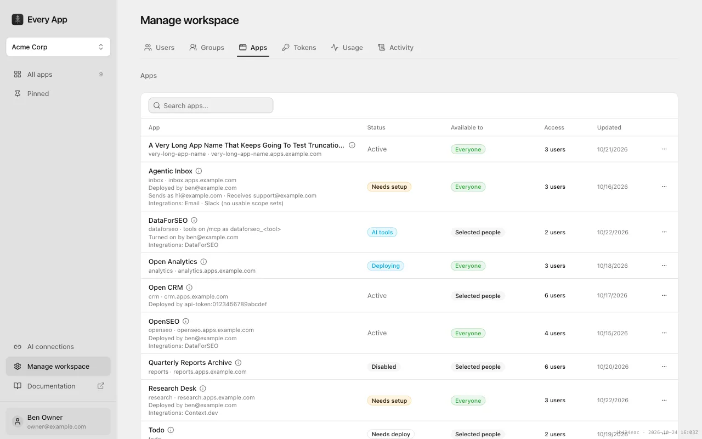
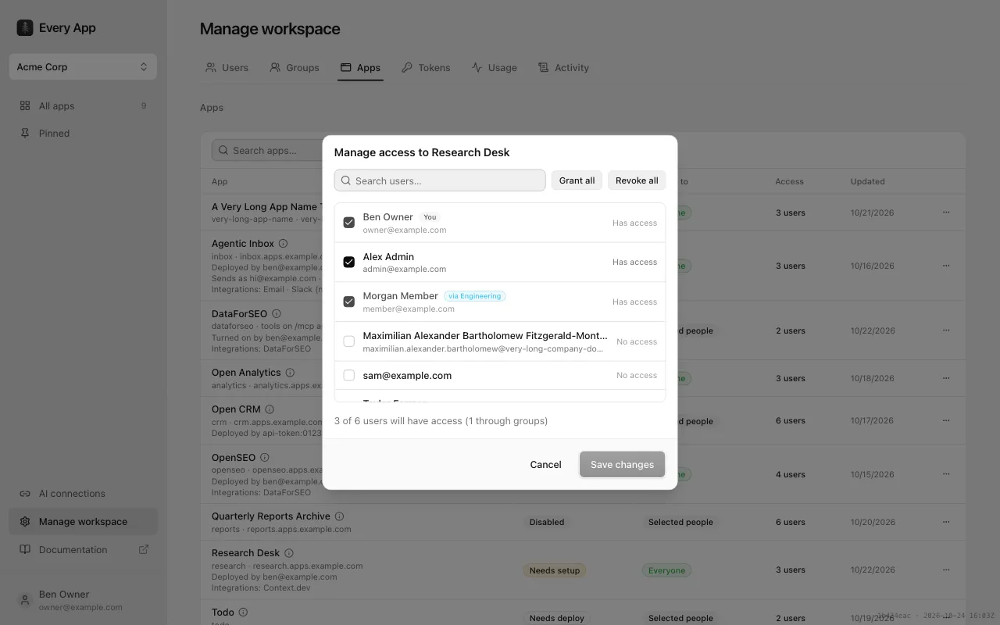
Design review #558, UI passes #450–#460, #535–#538.
Users
- Invite by email, or copy a one-time link.
- Newest first, so pending invitations sit near the top.
- Deactivate, delete, reset a password.
- After the rollout: a reset ends every session.
- Removing a member clears groups, grants and tokens at once.
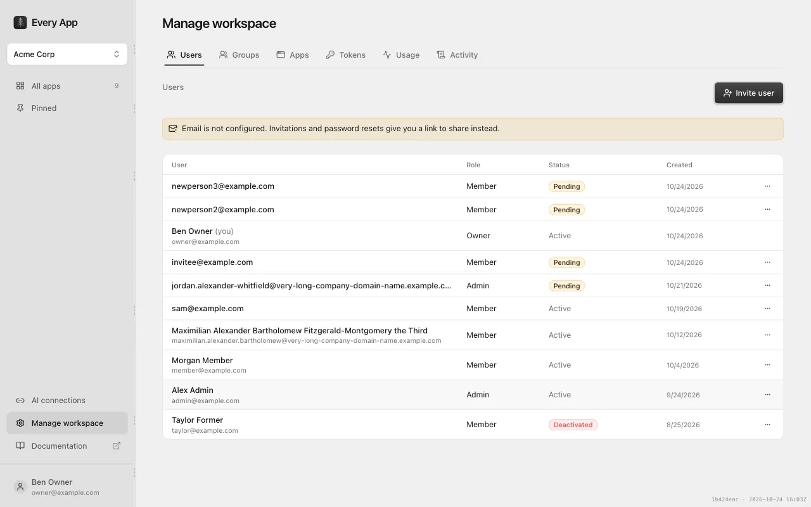
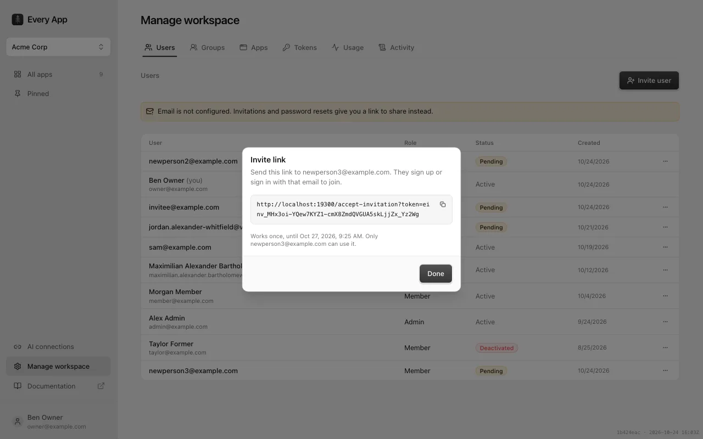
#405 reset ends sessions, #407 reset mail.
NewLive after the rollout
Groups
- Groups of members.
- Grant an app to a group once, not person by person.
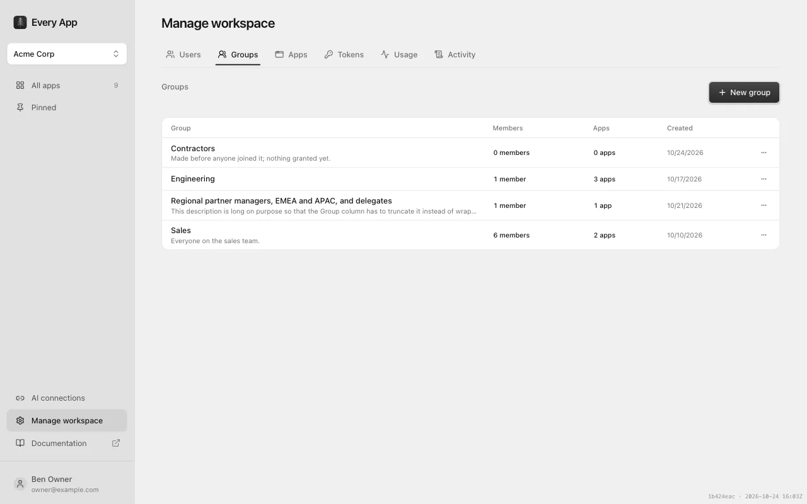

#384 #385.
Usage is liveCaps after the rollout
Usage and monthly caps
- Provider calls counted per app, member and provider, monthly.
- An owner or admin can cap an app's calls per month.
- Caps are off by default.
- A reached cap refuses calls until the month ends.
- An admin can raise it.
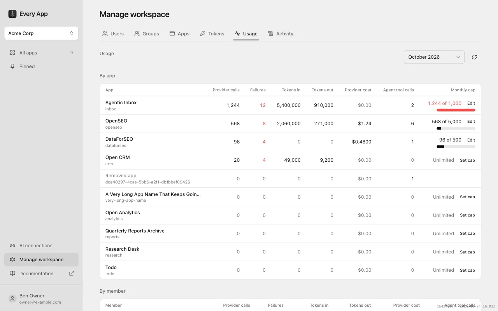
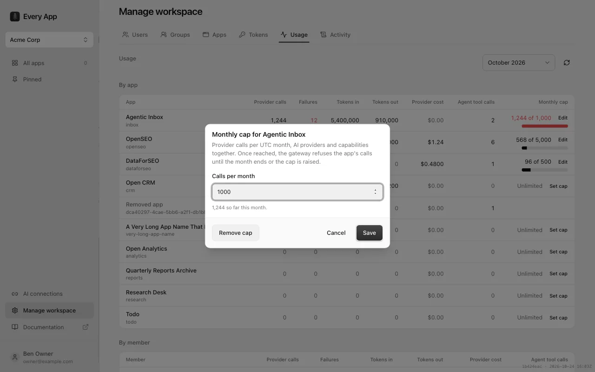
#381 #382 #416.
Activity
- Every agent tool call: when, who, app, tool, allowed or not.
- New, live after the rollout: which AI client made it.
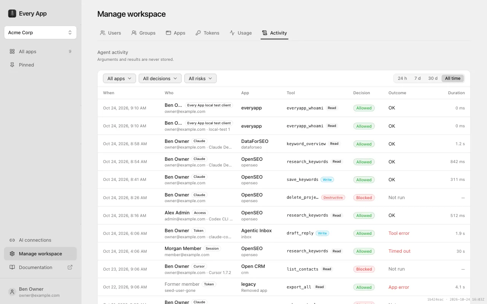
#434 #459 #505 #538.
NewNot live, no spend
Provider apps
- A data provider offered to AI clients as an app.
- It uses the gateway's own key.
- DataForSEO first, with 17 curated tools.
- One CLI command turns it on.
- Counted and capped like any app.
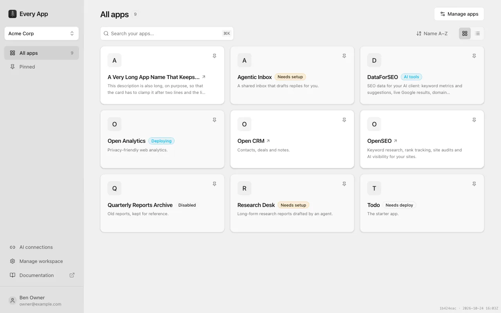
#485 #489.
The setup dialog: three small gaps
- The email instruction names one of two email settings.
- It ends at "copy, then Close". No what-happens-next.
- A long secret name breaks across lines.
- Two are copy. The email one makes display name required.
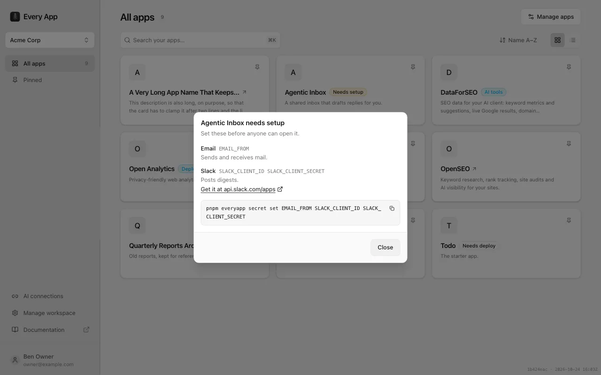
The organization is named after you, forever
- The first organization takes the owner's name.
- It cannot be renamed. The sidebar reads "Ben Owner" twice.
- Proposed: an optional Organization field on the claim form.
- That form is sign-in territory. Your call.

Sign-in offers "Sign up" on an invitation-only gateway
- Behind Access, an unknown person sees two identical alerts.
- SSO is still offered to them.
- Proposed: Sign up only when open. One alert behind Access.
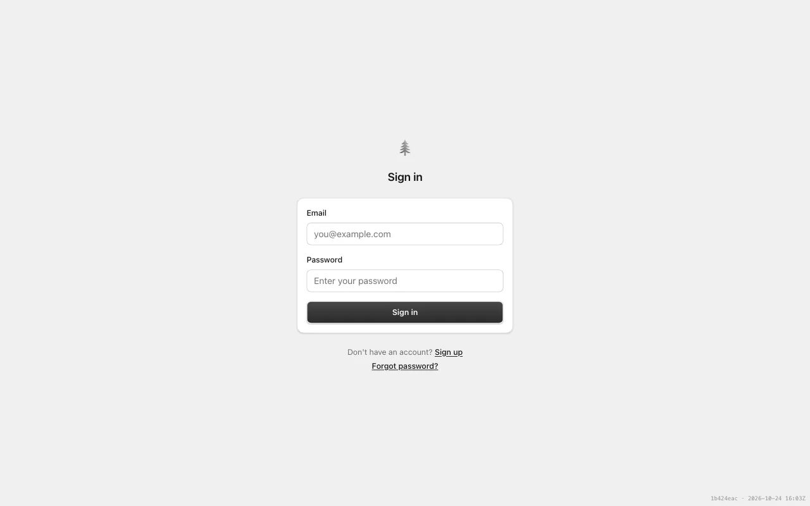

Question 10: the trimmed auth and consent copy
- Sign-in and consent copy was trimmed overnight.
- Merged under your rule.
#461 auth and consent copy.
"Connect Claude" leads to an empty page with no way in
- A member told to connect Claude lands on an empty page.
- No address, no docs link.
- The sidebar's Documentation link opens everyapp.com's home.
- Proposed: show the address, link the docs.
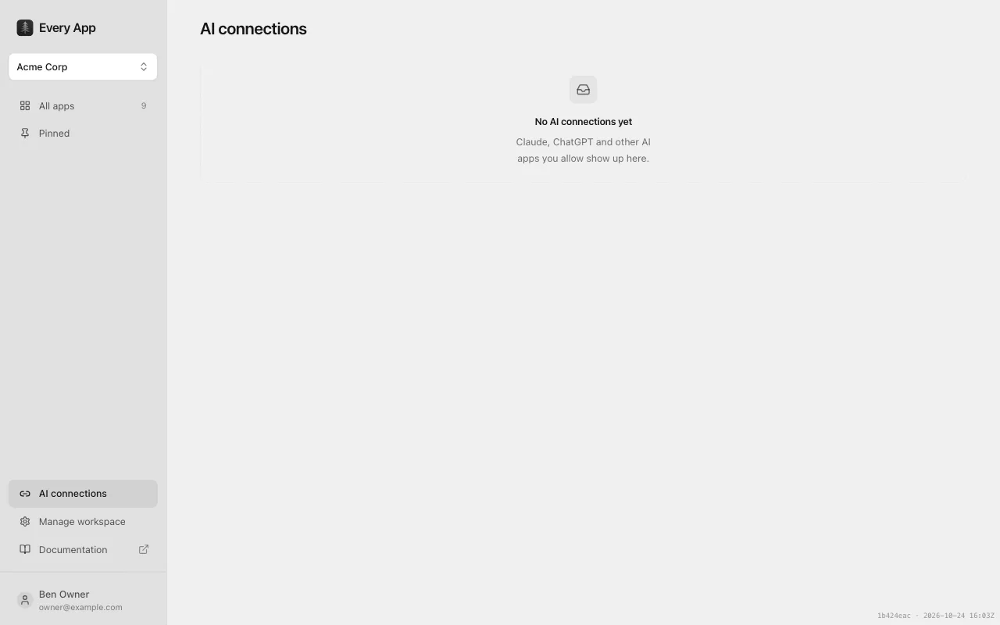
Build the 14 launch-worthy fixes today?
- The review ranked 25 fixes. 14 are launch-worthy.
- Most are copy, links and small states.
- Five touch sign-in, the claim form, invitations, tokens, passwords.
- Those would come to you as held PRs.
- One thread, today.
Full list: TODO.md "UI review (2026-10-25)". Review page: docs/design/2026-10-25-ui-review/index.html.
The gateway UI changed overnight in two passes. Anything to undo?
- Pass one: one look, one error shape, one empty state.
- Also shorter dialogs and a tidier activity table.
- Pass two: setup dialog, Apps, Groups, Usage, Activity.
- Each has before and after shots. Each reverts cleanly.
Pass one #450 #452 #457 #459 #460. Pass two #535–#538. Shots on branch ui-screenshots-2026-10-24.
What we judged and left, for admins
- Groups have no levels. No identity-provider sync yet.
- Caps count AI and provider calls alike.
- A burst can run a few calls past the cap.
- Only owners and admins see Usage and Activity.
- One owner per organization. No co-owner, no handover.
- Provider apps turn on from the CLI only. No Admin button.
- Access starts with who turned it on, plus owners and admins.
- Phone tables still overflow. A card-per-row layout is parked.
- "Manage workspace" in the gateway, "Admin" in the CLI. Pick one.
4 of 7
What a developer experiences now
- Fewer commands, plainer names. Apps that say what they need.
The CLI speaks plainly
- Help is grouped by what you are doing.
updatethe gateway.installa published app.releasepacks one.- The workflow group and hosted-only commands are gone.
BUILD AN APP create Create a new app from the starter template dev Run the app locally behind a dev Gateway deploy Deploy the app in this directory release Pack the app in this directory as a release others can install db Migrate, query and restore an app's D1 database RUN A GATEWAY login Log in to Cloudflare setup Install or repair the Gateway update Update the Gateway to this checkout (after git pull) install Install an app someone published, from GitHub or a release file status Show the Gateway, its apps and anything to fix delete Remove an app from the Gateway access Put Cloudflare Access in front of the Gateway and its apps, or take it off secret Set, remove and list secrets and Gateway settings provider Offer a data provider (DataForSEO) to members' AI clients as an app email Manage the addresses an app sends as and receives at teardown Delete everything Every App created in a test account
#464 CLI language, #441 hosted surface removed.
An app says what it needs
- Each setting is required, optional, or one of a group.
- The CLI shows what is set, where, and the fix.
- The deploy prints who can open the app.
- And its public routes.
$ pnpm everyapp status APP STATUS URL DEPLOYED BY PUBLIC crm ! needs setup https://crm.example.com dev@example.com todo ✓ live https://todo.example.com dev@example.com APP SETTING WHERE STATUS crm OPENROUTER_API_KEY Gateway ! not set crm CONTEXT_API_KEY Gateway not set (optional) crm TOKEN_ENCRYPTION_KEY crm ! not set ! crm needs setup OpenRouter: Drafts replies. Get it at https://openrouter.ai/settings/keys Guide: .claude/skills/everyapp/setup/openrouter.md Run: pnpm everyapp secret set OPENROUTER_API_KEY TOKEN_ENCRYPTION_KEY --app crm
#383 manifest needs, #397 #494 CLI, #424 public routes in the deploy summary.
Agent docs and setup skills
- Everything an agent needs is written for everyapp.com/llms.txt.
- Every command, every error code, what an app receives.
- Live when you deploy the site.
- The everyapp skill is copied into each new app.
- A setup guide per integration walks the agent through keys.
- A test fails when a doc cites a missing command.
#420 agent docs, #430 setup skills, #436 MCP skill, #504 #517 drift tests.
A repo with less in it
- Gone: example apps, mobile app, hosted-only CLI, Docker path.
- Gone: research and history docs, per-package lockfiles.
- One root install. The starter lives in
starter/.
Simplify #427 #433 #441 #442 #447 #448 #449 #464.
Security a developer can read and CI can check
- The threat model: what is promised, to whom, where tested.
- More than 300 promises, most pinned by tests.
- A security review runs on every PR in CI.
- It only warns until your API key is set. Question 11b.
#413 threat model, #388 security-review CI, register kept current through #554.
Where does a new app live?
- Docs say: create your app inside the Every App checkout.
- That breaks their next
git pull. - The new app changes a shared file.
- Last night's docs explain the recovery.
- The product decision is yours. The cold read posed three ways.
Cold read fix 2, #550. TODO.md onboarding loop finding 4.
What we judged and left, for developers
- A key never goes through the agent's chat.
- The person pastes it in a second terminal.
- Hosted tier parked until after launch. A short vision doc.
- Its code stays in the gateway, switched off.
- No code mode for launch.
- You chose a gateway search tool. Being built as a held PR.
- Apps shipping skills beside tools is the direction. Not built.
- Until the site deploys, the skill's doc links redirect home.
5 of 7
Security and trust
- Promises written down. Boundaries tighter. One mistake caught.
What got tighter this week
- Scopes per app. Each app lists what it needs from Google, Microsoft, Slack.
- The gateway holds it to that list.
- Live after the rollout. OpenCRM must redeploy first.
- Groups and caps. Grant by group. Cap an app's monthly calls.
- Six boundary fixes.
- You can only finish your own provider connection.
- A password reset ends every session.
- Cookie and path tricks are refused.
- One DataForSEO route is closed.
- Plainer errors. No internal detail. Unknown paths get a plain 404. Question 21.
- Setup gate. An app missing a key is closed. Tools leave the AI surface. Question 8.
- None of this runs on everyapp.team yet. Question 12 carries it.
#411 #412 #414 #425 scopes; #387 #402 #403 #405 #406 #407 fixes; #554; #396.
A test account's token was committed for 46 minutes
- A loop file with a test account's token was committed.
- Removed 46 minutes later. Still in this repo's history.
- Scoped to the throwaway test account, never your main one.
- Roll it in that account's dashboard, under API Tokens.
- Then update the loop's accounts file on your machine.
- The public copy must start from a fresh commit. It does.
In with #488, out with #496. Launch doc item A11.
The threat model is final. Five things need your hands.
a. Where do people report a vulnerability?
- SECURITY.md points at GitHub private reporting.
- That only works once you switch it on.
- Or name an address instead.
b. Let the security review in CI run for real
- Needs an Anthropic API key in Actions secrets.
- And "require approval for external contributors".
- Both are public-repo settings. Done at the flip.
c. Browser installs
- With a deploy token, apps install from the browser.
- Then any owner or admin of any organization can.
- It installs into your Cloudflare account.
d. The 17 old Workers still on workers.dev
- Old gateway era. Pre-fix code behind nothing.
- Three still answer. Nothing links to them.
e. The old npm packages
- npx everyapp still installs the old 0.2.2.
- Deprecate with a message, or publish 0.3.0.
docs/threat-model.md and docs/threat-model-invariants.md. Launch doc items A5, A10, B10.
What two outsiders found
- Two outside reviewers read everything a stranger can.
- They poked the live install 154 times.
- The walls held. No server errors. Everything behind Access.
- Open paths answered exactly as promised.
- The problems were words and packaging:
- Links to repos that do not exist.
- Three "what does this do to my account" pages missing.
- A prompt rule that loops.
- Prices nobody verified.
- Most of that merged last night.
- Repos are question 20. Domain price has no card. Check Sunday.
docs/design/2026-10-cold-read.md. Fixes #549–#553 merged, #554 merged under your rule.
The README links four repositories. Three do not exist.
- The README links four app repos under every-app on GitHub.
- Three answer 404.
- open-seo exists, but has no Every App port.
- None has a release.
- The apps still depend on this private repo.
- A new public repo would not build on its own.
Cold read fix 1, which also gives a launch-morning check per repo.
We merged a held gateway PR under your rule
- Two small security fixes were held for your eyes.
- Then merged under "merge everything green".
- Error messages no longer carry internal detail.
- Unknown addresses get a plain not-found page.
- Both had tests and one independent review.
#554.
An app missing a key answers before the sign-in check
- Visitors to an unready app see its setup dialog.
- Everything else is refused, public routes included.
- This happens before sign-in.
- Why gate first: nobody reaches a half-working app.
- The cost: a stranger learns an app by that name exists.
- Access in front hides even that.
#396. TODO.md "Secrets model (2026-10-24)".
What we judged and left, on security
- Carter must sign in once through Access first.
- Then passwords can go off on everyapp.team.
- Apps can read Google and Microsoft, not send mail. Slack can post.
- A stolen admin session can still take over a member.
- Access in front is the launch mitigation.
- Open gaps: owner recovery, narrower tokens, admin re-auth.
- TODO.md travels to the public repo, scrubbed.
- It describes everyapp.team's internals and the token incident.
- Research and launch logs stay home.
6 of 7
Decisions and assumptions
- The remaining calls, then what the night settled itself.
Agentic Inbox: OpenRouter as the default AI provider?
- Make OpenRouter the inbox's default AI provider.
- Then the one gateway key serves it like the others.
- Held for your yes.
- Without it, the rollout sets the provider by hand.
agentic-inbox PR #6.
Say "go" and the rollout runs
- Everything is merged. None of it is live.
- Say go and four things happen, in order:
- The database updates, with a restore point.
- The four apps redeploy. OpenCRM first.
- The gateway updates.
- We check everything still opens.
- OpenCRM first: the gateway now checks provider scopes.
- Out of order, OpenCRM and Agentic Inbox would close.
- Question 7 above decides how the inbox goes out.
- For the record: everyapp.team was updated overnight, several times.
- The last time before the hold landed.
- Verified healthy. Nothing migrated. Item 13.
Order in the notes, item 12.
Whose name goes on the MIT license?
- LICENSE and SECURITY.md are on main.
- The copyright line says "Every App contributors".
#523.
Carter's PR still conflicts. Still want it?
- The one-lockfile change merged on your yes.
- Carter's managed-addresses PR conflicts with it.
- The launch doc already puts it after launch.
#377, after #448.
Settled overnight, no action from you
- 4. Review queue: all but one merged under your rule. The last was closed as superseded.
- 6. The secrets branches merged in order. Done.
- 13. The unowned gateway deploy: superseded, gateway healthy. Dropped.
- 14. Code mode: you answered in the thread. Search tool, no per-app caps, current MCP SDK. Compact surface: a held PR, being built.
- 15. Small MCP fixes launched without waiting. All merged. Say so if you want any out.
- 16. Onboarding loop control run passed. Claude Code twice, Codex with one nudge. Cursor and OpenCode wait on your keys.
- 18. A launch-blocking CLI bug: fixed in one line. A CI job now catches that class.
7 of 7
Copy your answers
- One click copies every choice and note as text.
- Paste it to us with the recording.
What happens next
- We prioritise from your recording and these answers.